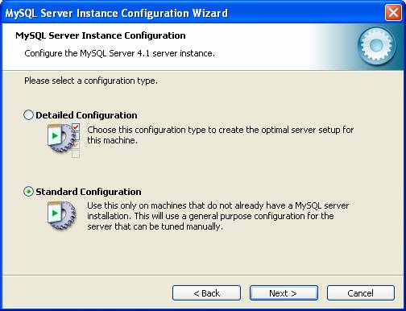

| Downloads |
| MySQL Database |
http://dev.mysql.com/downloads/mysql/ |
| Connector J |
http://dev.mysql.com/downloads/connector/j/ |
| Tomcat |
http://jakarta.apache.org/tomcat/ |
| Tomcat JSTL |
http://cvs.apache.org/builds/jakarta-taglibs/nightly/projects/standard/ |
| Installation |
| MySQL Commands |
| command |
mysql> \. externalSQLFile.sql |
Example of executing an external
SQL file. |
| mysqladmin |
mysqladmin -u username -p command |
Logging into the mysql server
and issueing a command. The password will be prompted after you
press carriage return. |
| mysqladmin |
mysqladmin -u root -p command |
Example of root logging in. |
| mysql |
mysql -u username -p |
Logging into the mysql command
line editor. |
| mysql |
grant all privileges on *.* to
root@localhost with grant option; |
Opens up all databases and
tables in the MySQL Database. |
| telnet |
telnet localhost 3306 |
Testing if MySQL is online. |
| MySQL
Installation and Configuration |
After downloading the MySQL software, unzip the zip file and execute the setup.exe program. This will bring up the screen above. Select Custom and then press Next >. |
Press the Change... button and modify the installation directory to c:\mysql or a root level directory. Press Next >. |
Your selections will be presented. Make sure that the directory is where you want and then press Install. |
You will be asked for registration, select Skip Sign-up and then press Next > |
The MySQL files will now be copied to your system. We now configure MySQL for your system. Press Finish. |
|  Select Standard Configuration and press Next >. |
Select Install As Windows Service and Include Bin Directory in Windows PATH and then press Next >. |
Enter a root password with confirmation and check if you want root access from remote machines. Press Next >. MySQL will start up. If you get a port 3306, default port for MySQL. See the next screens. |
Get to this screen by clicking on Start/Settings/Control Panel/Administrative Tools/Services and find the MySQL service. |
Press the Stop button in the Service status panel. Then remove MySQL from the system all together before trying a newer instance. |
Once everything is set, this screen appears. Press Execute and MySQL will prepare configuration, write configuration, start service and apply security settings. MySQL should be started. |
| Tomcat
Basic Installation and Configuration |
| <!DOCTYPE html PUBLIC
"-//w3c//dtd html 4.0 transitional//en"> <html> <head> <title>Test Page</title> </head> <body> <p>Test Page</p> </body> </html> |
| Figure
Tomcat-1 Test.jsp |
| <?xml version="1.0"
encoding="ISO-8859-1"?> <web-app xmlns="http://java.sun.com/xml/ns/j2ee" xmlns:xsi="http://www.w3.org/2001/XMLSchema-instance" xsi:schemaLocation="http://java.sun.com/xml/ns/j2ee http://java.sun.com/xml/ns/j2ee/web-app_2_4.xsd" version="2.4"> <description>Test Page</description> <display-name>Test Page</display-name> </web-app> |
| Figure
Tomcat-2 web.xml |
| Tomcat and MySQL Configuration |
| <!-- Add MySQL
******************************************************************
--> <Context path="/cv64" docBase="cv64" debug="5" reloadable="true" crossContext="true"> <Resource name="jdbc/cv64DB" auth="Container" type="javax.sql.DataSource" maxActive="100" maxIdle="30" maxWait="10000" username="root" password="bobby" driverClassName="com.mysql.jdbc.Driver" url="jdbc:mysql://localhost:3306/cv64?autoReconnect=true"/> </Context> <!-- Add MySQL ****************************************************************** --> |
| <?xml version="1.0"
encoding="ISO-8859-1"?> <web-app xmlns="http://java.sun.com/xml/ns/j2ee" xmlns:xsi="http://www.w3.org/2001/XMLSchema-instance" xsi:schemaLocation="http://java.sun.com/xml/ns/j2ee http://java.sun.com/xml/ns/j2ee/web-app_2_4.xsd" version="2.4"> <description>Test Database</description> <display-name>Test Database</display-name> <resource-ref> <description>cv64 DB Connection</description> <res-ref-name>jdbc/cv64DB</res-ref-name> <res-type>javax.sql.DataSource</res-type> <res-auth>Container</res-auth> </resource-ref> </web-app> |
<%@ taglib uri="http://java.sun.com/jsp/jstl/sql" prefix="sql" %> |
Web
Contact